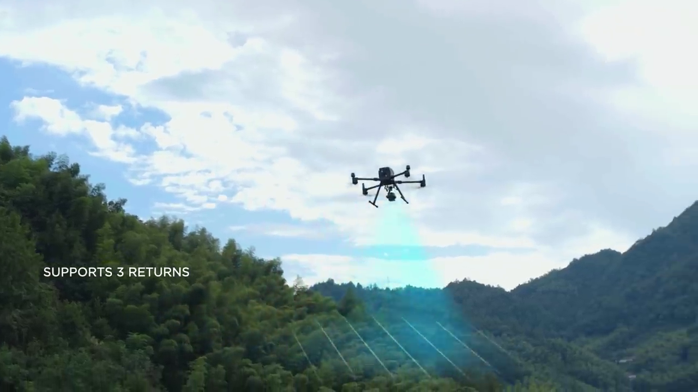
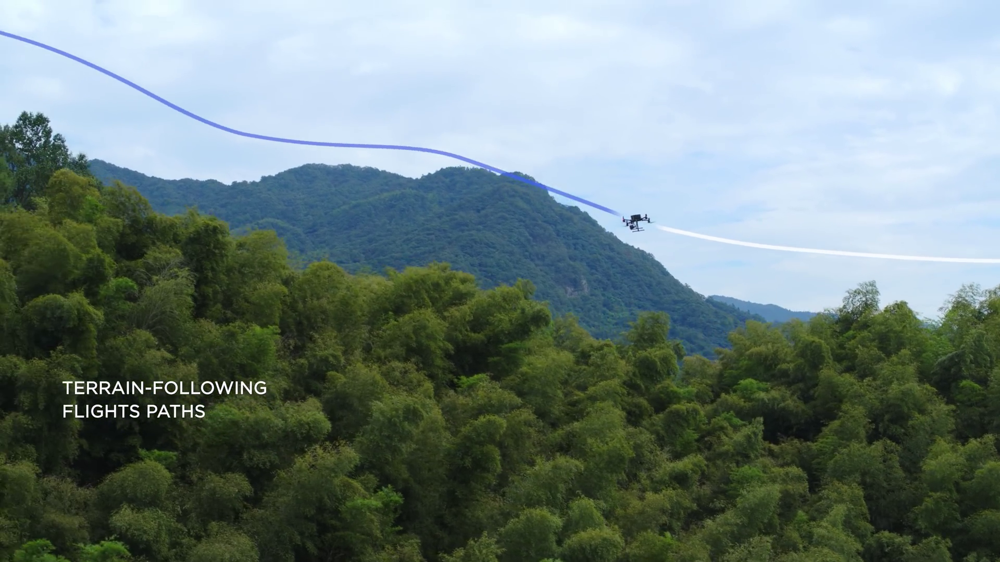
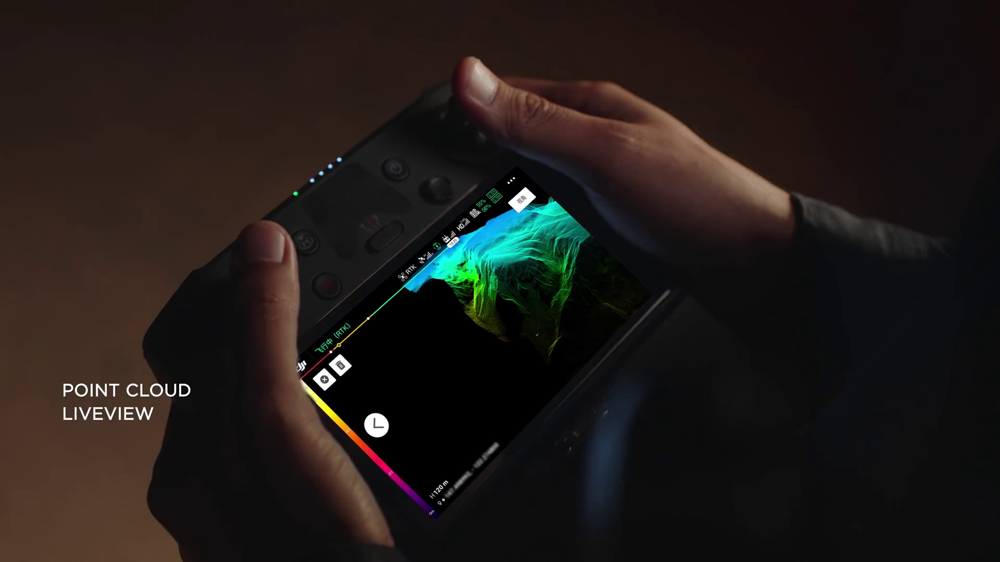
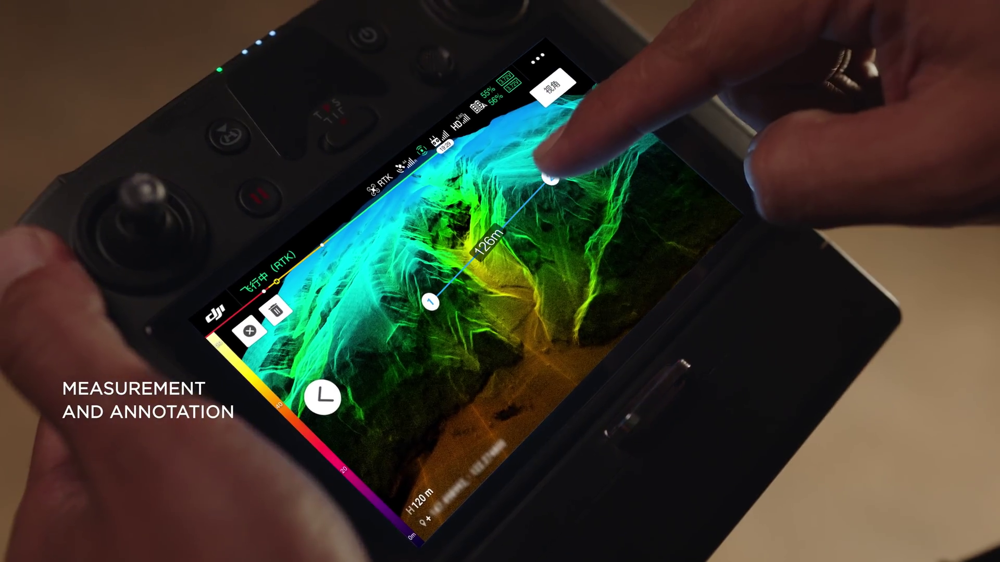
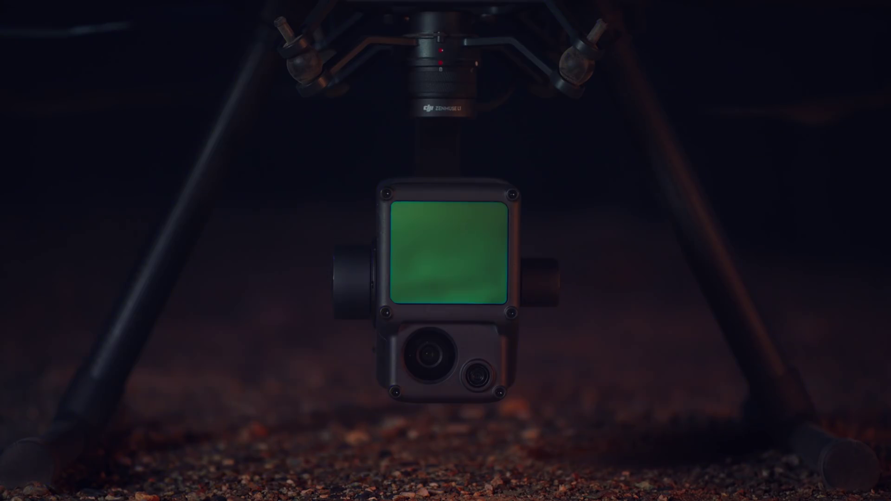
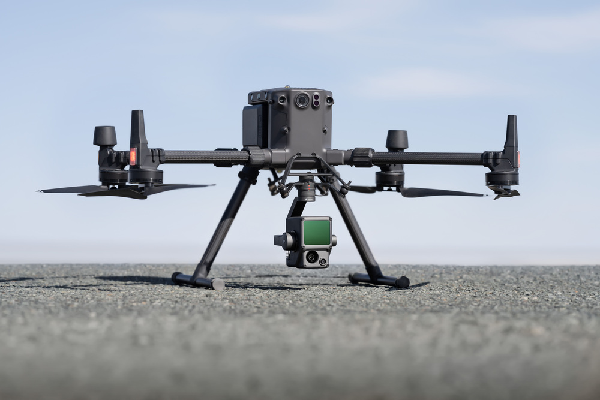
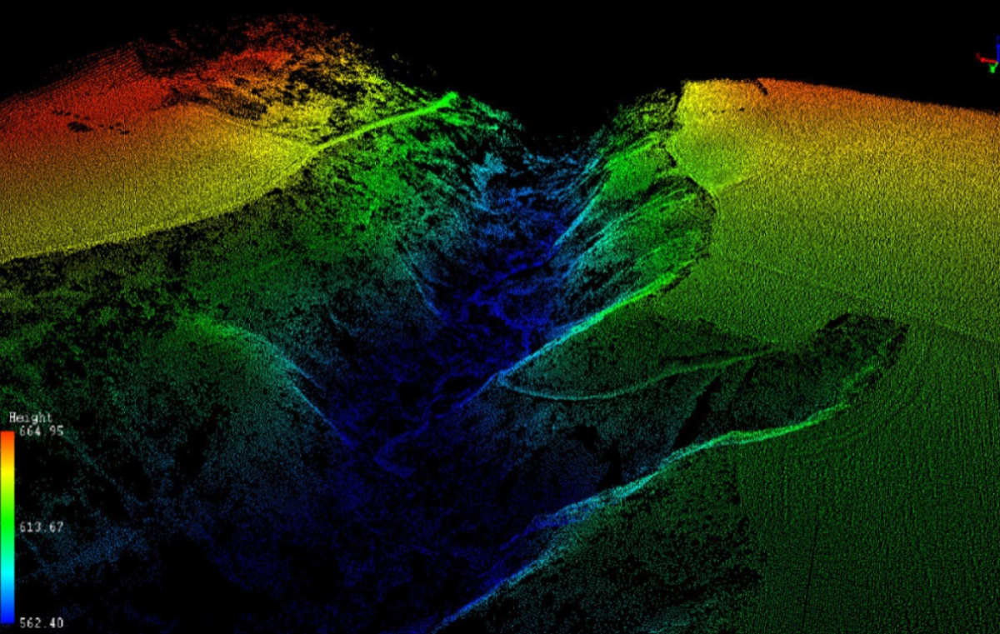
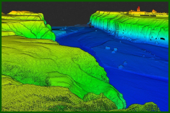
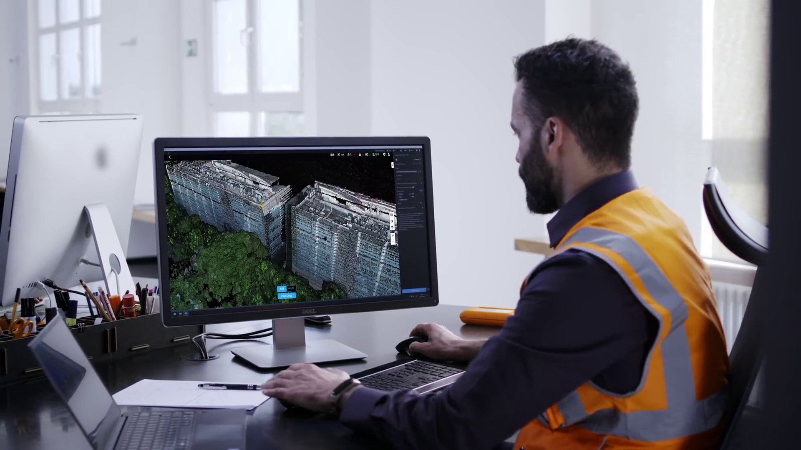
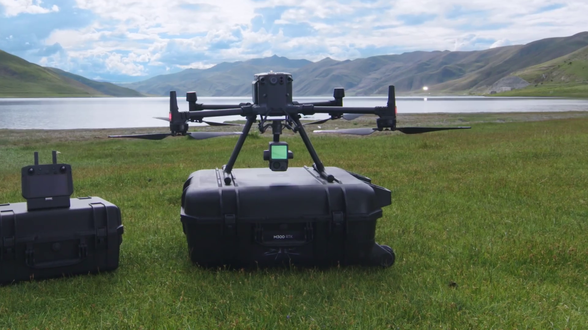

LiDAR Drone Mapping in Costa Rica
Precision topographic surveys with ±1–3 cm accuracy using DJI Matrice 300 RTK and Livox LiDAR technology — penetrating Costa Rica's densest forest canopy.
What is LiDAR Drone Mapping?
LiDAR (Light Detection and Ranging) is an advanced surveying technology that uses laser pulses to create highly accurate 3D maps of terrain and structures. Unlike traditional surveying methods that require ground crews and are limited by vegetation, LiDAR can penetrate forest canopy and dense vegetation to reveal the precise topography underneath.
At Drone Survey Costa Rica, we utilize the DJI Matrice 300 RTK equipped with a Livox LiDAR module — a professional-grade system that delivers survey-quality accuracy across diverse Costa Rican landscapes, from dense rainforests to construction sites.
LiDAR surveying is particularly valuable in Costa Rica where terrain complexity, vegetation density, and climate conditions make traditional surveying challenging. Our aerial LiDAR solution eliminates the need for ground crews to access difficult terrain, reducing costs and safety risks while delivering results in days instead of weeks.
How LiDAR Mapping Works
Equipment: The DJI Matrice 300 RTK carries a Livox LiDAR module that emits laser pulses at a rate of 240,000 points per second. This system also integrates RTK GPS for absolute positioning accuracy.
Data Collection: As the drone flies predetermined flight paths over your survey area, the LiDAR sensor continuously emits laser pulses and measures the time for light to return after reflecting off terrain, vegetation, and structures. RTK GPS provides real-time positional accuracy of ±2 cm horizontally.
Point Cloud Generation: The reflected signals are converted into a 3D point cloud — millions of individual points with precise XYZ coordinates. Each point represents a reflection from terrain, vegetation, buildings, or other objects.
Data Processing: Our post-processing workflow classifies points into ground, vegetation, and objects, then generates deliverable products including Digital Elevation Models (DEM), orthophoto mosaics, and contour maps.
Output: All data is georeferenced to Costa Rica's official coordinate system and delivered in standard industry formats compatible with AutoCAD, GIS software, and engineering platforms.
LiDAR in Action
A closer look at what our airborne LiDAR system does in the field — from emitting the laser scan to reviewing the point cloud live on the controller.

Multi-Return Scanning
Each laser pulse records up to three returns, so the beam can pass through gaps in the canopy and still capture the ground beneath.

Terrain-Following Flight
Adaptive flight paths hug the contours of the land, keeping a consistent altitude above ground for uniform point density on steep terrain.

Real-Time Point Cloud
A live colored point cloud streams to the controller during the flight, letting us confirm coverage and quality before leaving the site.

In-Field Measurement
On-site measurement and annotation tools let us check distances, elevations, and features right on the controller, on the spot.
System Specifications
| Accuracy | ±1–3 cm vertical accuracy in optimal conditions; ±5–10 cm under dense vegetation |
|---|---|
| Range | 200 meters maximum operational altitude with point cloud collection up to 150 m |
| Data Density | 240,000 points per second collection rate; 20–50 points per square meter ground density |
| Vegetation Penetration | Penetrates 2–4 meters of forest canopy to reveal ground topography beneath vegetation |
| Flight Time | 45-minute operational endurance per battery; scalable to large survey areas |
| Coverage Area | Single projects from 50 hectares to 5,000+ hectares across all of Costa Rica |
| Platform | DJI Matrice 300 RTK with Zenmuse L1 LiDAR + 1-inch CMOS camera, 3-axis gimbal |
| Coordinate System | Georeferenced to Costa Rica's official coordinate system (CRTM05) |

The Sensor at the Heart of It
The Zenmuse LiDAR module pairs a Livox laser scanner with a high-precision IMU and a 1-inch CMOS camera on a 3-axis stabilized gimbal. That green lens is where the magic happens — firing 240,000 pulses per second and recording color and intensity for every point it captures.
LiDAR Mapping Use Cases in Costa Rica

Topographic Surveys
Obtain precise elevation data for engineering design, infrastructure planning, and feasibility studies. Perfect for baseline topographic documentation of undeveloped land.

Construction Site Mapping
Create detailed pre-construction surveys, track site progress with periodic scans, and verify cut/fill volumes. LiDAR ensures centimeter-level accuracy for design compliance.

Forestry Analysis
Measure forest structure, canopy height, timber volume, and biomass. Essential for sustainable forest management, carbon credits, and reforestation monitoring in Costa Rica's conservation projects.

Flood Risk Assessment
Generate precise Digital Elevation Models to identify flood-prone areas, model water flow, and design drainage solutions. Critical for property development near rivers and coastal zones.

Agriculture & Land Development
Survey terrain for agricultural planning, terrace design, and soil conservation. Determine drainage patterns and optimal land use allocation across properties.

Infrastructure Design
Support road design, utility corridor planning, and facility siting with accurate terrain models. LiDAR provides the elevation data foundation for engineering projects.
LiDAR Survey Deliverables
- 3D Point Cloud — Complete LiDAR point cloud in LAS/LAZ format with RGB color and intensity values
- Digital Elevation Model (DEM) — Bare earth elevation grid at 25 cm resolution, removing vegetation and structures
- Digital Surface Model (DSM) — Elevation surface including vegetation and buildings for volume calculations
- Contour Maps — Vector contour lines at specified intervals (typically 0.5 m or 1 m) in DWG/DXF format
- Orthophoto Mosaic — High-resolution aerial image perfectly registered to coordinates (GeoTIFF, 5 cm resolution)
- Classified Point Cloud — Ground points, vegetation, buildings, and power lines classified and separated
- Hillshade Visualization — 3D terrain visualization for presentation and analysis
- Shapefiles & GeoJSON — Vector formats for GIS integration and further analysis
- AutoCAD Compatibility — All data available in DWG format for direct CAD integration
- RINEX GPS Data — Raw GPS data for post-processing corrections if required
From Point Cloud to Deliverables
Raw scan data is only the beginning. Back at the desk, our team classifies, cleans, and models the point cloud into the engineering-ready products you actually use.

Survey-Grade Post-Processing
Every point is georeferenced to Costa Rica's CRTM05 coordinate system, then classified into ground, vegetation, buildings, and power lines. From the cleaned cloud we generate bare-earth DEMs, surface models, contours, and orthophotos.
The result is data you can drop straight into AutoCAD, ArcGIS, or QGIS — measured, modeled, and ready for design within a typical 72-hour turnaround.
Why Choose Drone Survey Costa Rica for LiDAR Mapping?
- Professional Equipment: DJI Matrice 300 RTK with Livox LiDAR — the industry standard for aerial surveying
- DGAC Licensed: All our pilots hold official drone operating licenses from Costa Rica's aviation authority
- National Coverage: We operate throughout all of Costa Rica, including remote rainforest and mountain regions
- Rapid Turnaround: Typical 72-hour delivery for processed data; rush options available for time-sensitive projects
- Survey-Grade Accuracy: ±1–3 cm vertical accuracy meets engineering and surveying standards
- Vegetation Penetration: LiDAR reveals terrain under Costa Rica's dense forest canopy where traditional methods fail
- Cost-Effective: More affordable than conventional ground surveys while delivering superior data quality and coverage
- Local Expertise: We understand Costa Rica's terrain, climate, and regulatory environment
- Data Longevity: Your point cloud data never expires — archive for future reference, comparison, and analysis
Field Operations Across Costa Rica
From lakeside clearings to remote rainforest ridges, we deploy the DJI Matrice 350 with rugged transport cases and a self-contained ground setup — ready to fly wherever your project is.

Mobile, Self-Contained Deployment
Our field kit travels in protective cases to even the most remote sites, letting us set up, launch, and scan without ground crews accessing difficult terrain.
Watch a Survey Flight
See the Matrice in flight as it runs a planned LiDAR mission, methodically scanning the survey area line by line for complete, uniform coverage.
LiDAR Mapping Pricing
Transparent, competitive pricing for professional LiDAR surveys across Costa Rica.
Standard LiDAR Survey
Plus $80 USD per hectare of survey area.
Example: A 100-hectare survey costs $1,000 + ($80 × 100) = $9,000 total.
Travel to remote locations may incur additional costs. Complex terrain or rush delivery increases fees. Contact us for a detailed quote tailored to your specific project.
Frequently Asked Questions
How accurate is LiDAR mapping compared to traditional surveying?
LiDAR achieves ±1–3 cm vertical accuracy in optimal conditions, matching or exceeding traditional ground surveys. The key advantage is speed and the ability to map terrain under vegetation. Traditional surveyors cannot easily access steep, forested, or swampy terrain that LiDAR covers effortlessly.
Can LiDAR penetrate dense rainforest vegetation?
Yes, LiDAR laser pulses can penetrate 2–4 meters of forest canopy. Multiple laser pulses reflect off canopy layers and the ground, allowing us to classify ground points beneath vegetation. This makes LiDAR invaluable for Costa Rica's densely forested areas where aerial photography alone cannot reveal terrain.
How long does a LiDAR survey take?
Flight time depends on survey area. A 100-hectare area typically requires 2–4 flights. Data collection takes 1–2 days depending on weather and logistics. Processing and delivery of final products typically takes 48–72 hours. We offer expedited processing for time-critical projects.
What weather conditions are suitable for LiDAR?
LiDAR operates in light to moderate rain and cloud cover. Heavy rain or storm conditions prevent operations. Unlike photography-based surveys, light cloud cover does not significantly impact LiDAR data quality. We can often survey on days when photogrammetry is impossible.
In what formats do you deliver LiDAR data?
We deliver point clouds in LAS/LAZ format, DEMs and DSMs as GeoTIFF, contour maps as DWG/DXF, and data also in Shapefile and GeoJSON formats. All data is georeferenced to Costa Rica's official coordinate system and compatible with AutoCAD, ArcGIS, QGIS, and specialized surveying software.
Can you monitor volume changes over time?
Yes. By conducting repeat LiDAR surveys at different dates, we can detect volume changes in stockpiles, excavations, and landforms. This is valuable for construction progress tracking, mining operations, and erosion monitoring. Contact us to discuss multi-temporal survey programs.
Ready to Map Your Property?
Get precise LiDAR survey data for your Costa Rican project. Rapid turnaround, professional results, competitive pricing.